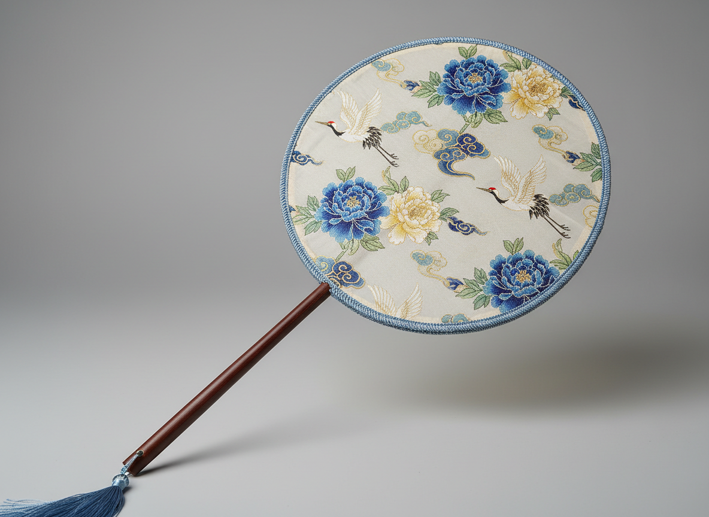
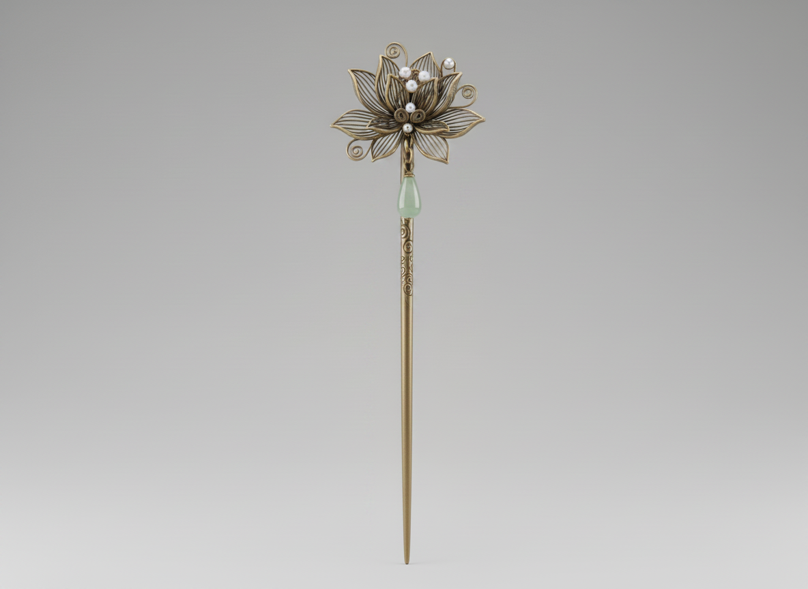

An interactive Web 3D exhibition inspired by Chinese traditional aesthetics, symbolic objects, and cultural storytelling
Main Viewer
Chinese Round Fan
Ready
Loading model…
ThemeTraditional Object
MaterialWood / fabric / tassel
StyleElegant Chinese aesthetics
Selected ModelFan
WireframeOff
LightOff
CameraFront
MusicOff
Interaction Panel
Controls
Model Switch
Animation
Display
Camera
Model Sections
Featured Cultural Objects
01Decorative Heritage
Chinese Round Fan
This object represents the elegance of Chinese decorative tradition. Its circular
silhouette, long handle, and refined surface treatment reflect grace, poise,
and the quiet beauty associated with classical visual culture.
02National Symbol
Symbolic Panda
The panda introduces warmth and familiarity into the exhibition. As an
internationally recognised symbol connected with China, it brings a softer,
more approachable cultural identity that balances the ornamental objects.
03Classical Ornament
Classical Hairpin
This object reflects the artistry of traditional Chinese adornment. Its
ornamental structure and precious material language suggest delicacy,
craftsmanship, and the visual richness of classical dress and ceremonial styling.
Reference / Media
Visual Notes

Fan Reference
This reference image supports the fan model design by showing its circular silhouette,
decorative surface, and traditional material character.
Panda Reference
This reference image supports the panda model design by defining the simplified
proportions, soft form, and friendly expression.

Hairpin Reference
This reference image supports the hairpin model design by showing its ornamental
structure, metallic feeling, and classical decorative detail.
Cultural Gallery
Chinese Fan — Historical Context
The following images explore the cultural heritage of the Chinese round fan — from its
decorative painted surfaces to its symbolic role in court life, opera, and classical art.
These references informed the visual and material choices made in the 3D model design.
Traditional round fan — circular silhouette and handle form
Painted surface with decorative motif detail
Silk fan with ornamental tassel and bamboo frame
Classical fan form as used in court and ceremonial settings
Cultural Gallery
Giant Panda — Symbol & Heritage
The following images explore the cultural significance of the giant panda as a national
symbol of China — from its natural habitat to its role in diplomacy and global identity.
These references informed the proportions and character of the 3D panda model.
Giant panda in its natural mountain forest habitat
Characteristic black-and-white colouring and body form
Soft, rounded proportions that informed the 3D model design
Panda as a national symbol and ambassador of Chinese identity
Cultural Gallery
Classical Hairpin — Ornament & Tradition
The following images explore the history and artistry of the classical Chinese hairpin —
from its Tang Dynasty origins to its role as a symbol of femininity, ceremony, and
refined personal adornment. These references informed the ornamental structure and
metallic surface treatment of the 3D hairpin model.
Tang Dynasty gold hairpin with floral ornament
Jade and gold hairpin from imperial court collection
Ceremonial hairpin worn in classical court hairstyle
Cultural Media
Video References
The following videos provide cultural and historical context for each of the three objects
featured in this exhibition — from the craft traditions of the Chinese round fan and classical
hairpin to the natural heritage of the giant panda.
Chinese Round Fan
Cultural and craft context for the traditional Chinese round fan (tuánshàn), informing the visual and material decisions made in the 3D model design.
Giant Panda
Natural heritage and cultural symbolism of the giant panda as a national symbol of China, informing the proportions and character of the 3D model.
Classical Hairpin
Craft tradition and ornamental history of the classical Chinese hairpin (fāzān), informing the structural and material language of the 3D model.
Visual Direction
Tang Sancai Colour Palette
The interface draws inspiration from Tang Sancai glazing, using muted amber,
ceramic green, earthy cream, and deep brown to create a warm and culturally
rooted visual identity.
Quick Notes
Development Notes
This website is designed not only as a 3D object viewer, but also as a digital
presentation of Chinese traditional culture through symbolic forms, visual storytelling,
and interactive presentation.